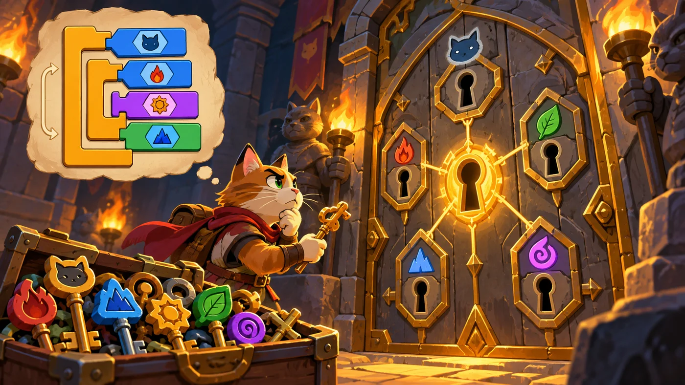
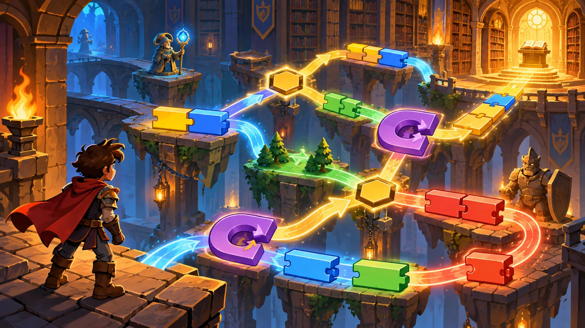

扣哒考级 · GESP 图形化 三级 · 第 6 单元 | 魔法绘本馆 STORYLOOM LIBRARY
谜题锁孔 复杂的逻辑判断
Complex Conditions

贺舒曼
镜中先知 · 你的向导
绘本馆最深处的门上，密密麻麻挂着一排锁孔。每个锁孔旁边刻着一行小字：
"须持证""年满十二""非红籍"……
你从口袋里摸出一把钥匙，插进第一个孔——没开；插进第二个——动了。
门后传来书签的声音："条件得全对上，光对一半不行。"
你从口袋里摸出一把钥匙，插进第一个孔——没开；插进第二个——动了。
门后传来书签的声音："条件得全对上，光对一半不行。"
贺舒曼 · 镜中先知
这一单元的题看着绕，其实只有一道工序：翻译。中文里的"并且"换成"与"，"或者"换成"或"，"不"用"不成立"包起来。 再加上一条铁律——动作不能当条件。
0 单元导语与目标
Before We Start
0.1 学习目标
- 会用与、或、不成立把简单条件拼成复合条件；
- 能把中文描述里的逻辑关系（"都""有一个""不"）翻译成积木；
- 会写"一条复合条件"和"嵌套判断"两种写法，并知道怎么选；
- 掌握逻辑推理题的列表法与排除法；
- 能对复杂问题写出正确的筛选条件。
0.2 考纲对照
| 考纲知识块 | 考纲要求 | 本单元小节 |
|---|---|---|
| 6 复杂的逻辑判断 | 算术运算、关系运算、逻辑运算的综合应用；对复杂逻辑的推理、分析、梳理，解决综合问题 | 1.1～1.2、2.1～2.3、3.1～3.3 |
| （知识点详述第 6 条） | 熟练掌握图形化编程中的逻辑推理能力，可以针对复杂问题写出对应的筛选条件 | 4.1～4.2 |
这是三级里"最像智力题"的一块。' '它不考新积木，只考一件事：你能不能把一句绕口的中文，写成一个精确的条件。
1 条件是一点点拼出来的
Building Conditions
1.1 简单条件与复合条件
锁孔门上刻着一行字："带钥匙的、且年满 12 岁的读者，可以进。"' '门上有两个锁孔——两个都得开。

assets/illustrations/scratch-L3-06-01_puzzle_keyhole.webp
【配图位】一扇布满多个锁孔的门，每个锁孔旁刻着一个条件符文，只有同时满足若干条件的那把钥匙才能开门。（提示词见《GESP配图清单与AI绘图提示词》第四节 3-6）
图 2（SVG）：简单条件与复合条件
1.2 三块逻辑积木的组合
图 3（SVG）：三块逻辑积木
重点示例：两个锁孔都要开
图形化积木
要点 三块逻辑积木都是六边形，可以互相嵌套，把简单条件一层层拼起来
2 把中文翻译成条件
Translating Chinese into Conditions
2.1 圈出"都"和"有一个"
图 4（SVG）：中文关键词对照表
打个比方：做这类题像做翻译——先把中文里的"连接词"圈出来，它决定了用"与"还是"或"。
圈对了连接词，剩下就是照抄成积木。
圈对了连接词，剩下就是照抄成积木。
2.2 处理那个"不"字

assets/illustrations/scratch-L3-06-02_condition_web.webp
【配图位】发光的条件网络图——若同时满足 A 与 B、或满足 C 而不满足 D，则通往下一间书房，路径以光带连接。（提示词见《GESP配图清单与AI绘图提示词》第四节 3-6）
图 6（SVG）："不"字怎么处理
2.3 只看条件、不看动作
做题的一个诀窍：题目给的积木里常常混着动作（"移动 10 步"、"说你好"）。这些不能当条件——六边形的槽只收六边形。
先把动作全部划掉，剩下的才可能是答案。
先把动作全部划掉，剩下的才可能是答案。
3 复杂判断的两种写法
Two Ways to Judge
3.1 一条复合条件
重点示例：把两个要求写进一条条件
图形化积木
要点 一个判断块、一条复合条件就搞定，脚本最简洁
3.2 嵌套判断
重点示例：分成两层判断
图形化积木
要点 外层判断"数量够不够"，内层判断"颜色对不对"——每一种"不满足"都能给出不同的回应
3.3 两者怎么选
图 7（SVG）：两种写法怎么选
一个实用原则："都要满足"优先用"与"——一条条件写完，不用缩进两层。
只有当"每种失败情况要分别处理"时，才拆成嵌套判断。
只有当"每种失败情况要分别处理"时，才拆成嵌套判断。
4 逻辑推理题怎么解
Solving Logic Puzzles
4.1 列表法与排除法
图 8（SVG）：列表法与排除法
4.2 一步一步推
图 9（SVG）：推理三技巧
打个比方：推理就像拧魔方——每确定一个位置，剩下的可能性就少一些，一直拧到只剩一种可能。
5 代码实战
Level Practice
这一关要把好几条条件叠在一起判断：符合的才处理，不符合的就跳过—— 这正是"复杂逻辑判断"的实战。
关卡
宠物翻译家
进入关卡 →
故事：
庄园里有好几只小宠物，它们说的话各不相同。你要逐条对照规则，
判断每一句属于哪一种，再做出对应的反应——听错一条，就会答错。

assets/stages/py-L3-06-stage1_pet_translator.webp
【关卡截图位】请把《宠物翻译家》的游戏画面截图放到此处（放入 assets/stages/ 目录，文件名为 py-L3-06-stage1_pet_translator.webp）。
思路：把"听懂"拆成两条条件：先判断它说什么类型，再判断要不要回应。 两条都用"与"连起来，就得到一条复合条件。
重点示例：两条条件一起用
图形化积木
读法 第一层用"与"（既是"喵"又有食物才喂），第二层用"或"（"喵"或"呜"都算打招呼）
自己试一试：把第一层的"与"改成"或"再跑一次——只要说了"喵"、或者只要食物大于 0，都会去喂它。体会一下"与"和"或"的区别，这就是本单元的核心。
这一关把三样东西合在了一起：' '输入（询问）→ 复杂条件（与 / 或）→ 输出（说）。
写复杂条件的小技巧：先用中文把条件写一遍，比如"既是喵、又有食物"；再把"既……又……"换成"与"，照抄进六边形槽里。
去扣哒世界闯这一关 →
6 常见陷阱
Common Traps
陷阱 1：把"与"和"或"用反。"带钥匙并且年满 12 岁"是"与"；"带钥匙或者家长陪同"是"或"。
正确做法：读题时把连接词圈出来——圈"并且/都"就用与，圈"或者/有一个"就用或。
正确做法：读题时把连接词圈出来——圈"并且/都"就用与，圈"或者/有一个"就用或。
陷阱 2："不"字放错位置。想表达"颜色不是红色"，写成"颜色 = 不红"是不成立的。
正确做法：先原样写"颜色 = 红"，再用不成立把整块包住。
正确做法：先原样写"颜色 = 红"，再用不成立把整块包住。
陷阱 3：把动作当条件。"移动 10 步""说你好"这些都没有"成立/不成立"的说法，塞不进六边形槽。
正确做法：条件是"能判断对错"的句子；动作只能放进"那么"的口里。
正确做法：条件是"能判断对错"的句子；动作只能放进"那么"的口里。
陷阱 4：嵌套判断漏掉"否则"的情况。题目要求"每种情况都有回应"，却只写了"如果……那么"。
正确做法：先数一数题目里有几种情况，每种都要有对应的分支。
正确做法：先数一数题目里有几种情况，每种都要有对应的分支。
7 题目练习
Practice
第 1 题改编自 2026 年 9 月 · 图形化编程 三级 第 12 题，其余为原创练习题。
改编自 2026 年 9 月 · 图形化编程 三 级 · 第 12 题单选题
有两个六边形积木：
①
②
如果此时
①
{数量 > 0} 且 {颜色 = 红}②
不成立 {数量 > 0}如果此时
数量 = 0、颜色 = 红，那么①、②两个积木的值分别是（ ）。A.false false
B.false true
C.true false
D.true true
B.false true
C.true false
D.true true
查看答案与详解
答案：B。先算里面的小条件，再算外面的逻辑运算：
·
·
· ① 是"与"：只要有一边不成立，整体就不成立 → false；
· ② 是"不成立"：把①里那句"数量 > 0"反过来——它本来不成立，反过来就成立 → true。
A、C、D 错：都是把"与"或"不成立"算错了。
口诀：与是"都成立才算"，或是"有一个就算"，不成立是"整个翻个面"。
对应小节1.2、2.2 逻辑运算的取值。
·
数量 > 0：0 大于 0 吗？不成立；·
颜色 = 红：成立；· ① 是"与"：只要有一边不成立，整体就不成立 → false；
· ② 是"不成立"：把①里那句"数量 > 0"反过来——它本来不成立，反过来就成立 → true。
A、C、D 错：都是把"与"或"不成立"算错了。
口诀：与是"都成立才算"，或是"有一个就算"，不成立是"整个翻个面"。
对应小节1.2、2.2 逻辑运算的取值。
原创练习题单选题
图书馆规定：带借书证，并且没有超期未还的书，才可以再借。下面哪个条件写法正确（ ）。
A.{有借书证 = 是} 或 {超期数 = 0}
B.{有借书证 = 是} 且 {超期数 = 0}
C.不成立 {有借书证 = 是}
D.{有借书证 = 是} + {超期数 = 0}
B.{有借书证 = 是} 且 {超期数 = 0}
C.不成立 {有借书证 = 是}
D.{有借书证 = 是} + {超期数 = 0}
查看答案与详解
答案：B。"并且"两个字就是提示——两个要求都要满足，所以用"与"；"没有超期"就是"超期数等于 0"。
A 错："或"太宽松了，只满足一个也能借；
C 错：把条件反过来了，变成"没有借书证"；
D 错：两个六边形不能相加——只有椭圆形的数值才能做加减。
对应小节1.2、2.1 与 / 或 的选用。
A 错："或"太宽松了，只满足一个也能借；
C 错：把条件反过来了，变成"没有借书证"；
D 错：两个六边形不能相加——只有椭圆形的数值才能做加减。
对应小节1.2、2.1 与 / 或 的选用。
原创练习题单选题
要表达"不是红色的"，正确的写法是（ ）。
A.{颜色 = 不红}
B.不成立 {颜色 = 红}
C.{颜色 > 红}
D.{颜色 = 红} 或 {颜色 = 蓝}
B.不成立 {颜色 = 红}
C.{颜色 > 红}
D.{颜色 = 红} 或 {颜色 = 蓝}
查看答案与详解
答案：B。先写出它"是什么"，再用"不成立"整块翻过来——这就是处理"不"字的标准做法。
A 错："不红"不是一个能比较的值；
C 错：颜色不是大小可以比较的数字；
D 错：那只排除了红和蓝两种，别的颜色还是没排除。
对应小节2.2 处理那个"不"字。
A 错："不红"不是一个能比较的值；
C 错：颜色不是大小可以比较的数字；
D 错：那只排除了红和蓝两种，别的颜色还是没排除。
对应小节2.2 处理那个"不"字。
原创练习题单选题
一段脚本写成"如果 数量 > 0 那么 { 如果 颜色 = 金 那么 { 拿走 } }"。当数量等于 0、颜色是金时，会执行"拿走"吗（ ）。
A.会执行一次
B.不会执行
C.会执行两次
D.程序会报错
B.不会执行
C.会执行两次
D.程序会报错
查看答案与详解
答案：B。这是嵌套判断：外层条件"数量 > 0"不成立，整块被跳过，内层的判断根本不会被执行，自然也不会"拿走"。
要点：嵌套判断里，外层不成立 → 内层完全不会跑；要"两个条件都满足才做"，也可以写成一条用"与"连起来的条件。
对应小节3.2 嵌套判断。
要点：嵌套判断里，外层不成立 → 内层完全不会跑；要"两个条件都满足才做"，也可以写成一条用"与"连起来的条件。
对应小节3.2 嵌套判断。
原创练习题多选题
下面哪些可以放进"如果……那么"的六边形条件槽里（ ）。
A.碰到鼠标指针？
B.x > 10 且 y < 20
C.移动 10 步
D.不成立 碰到颜色 #ff0000？
B.x > 10 且 y < 20
C.移动 10 步
D.不成立 碰到颜色 #ff0000？
查看答案与详解
答案：A、B、D。三条都是"能判断成立或不成立"的条件，外形也都是六边形。
C 错："移动 10 步"是动作，它没有"成立/不成立"的说法，形状也是普通积木块，插不进去。
对应小节2.3 只看条件、不看动作。
C 错："移动 10 步"是动作，它没有"成立/不成立"的说法，形状也是普通积木块，插不进去。
对应小节2.3 只看条件、不看动作。
原创练习题判断题
在图形化编程中，"A 且 B"表示 A、B 两个条件必须同时成立，整个条件才成立。（ ）
查看答案与详解
答案：正确（√）。"与"就是"两个都要"——只要有一个不成立，整个条件就不成立。
对比着记："A 或 B"是"有一个成立就行"，两边都不成立时才不成立。
对应小节1.2 三块逻辑积木的组合。
对比着记："A 或 B"是"有一个成立就行"，两边都不成立时才不成立。
对应小节1.2 三块逻辑积木的组合。
8 本单元小结
Unit Summary
贺舒曼 · 镜中先知
这一单元没有新积木，只有一件事：把中文准确地翻译成条件。三步走：圈连接词（都→与、有一个→或）→ 处理"不"字（用不成立包起来）→ 划掉动作，只留条件。
你在锁孔门前学到了什么
- 复合条件：用与 / 或 / 不成立把简单条件连起来，外形还是六边形；
- 中文对照：并且·都 → 与；或者·有一个 → 或；不·没 → 不成立；
- "不"字的写法：先写"是什么"，再用不成立整块包住；
- 两种写法：一条复合条件（简洁）vs 嵌套判断（能分别处理每种失败）；
- 推理题解法：画表格 → 划掉不可能 → 用到只剩一个。
下一站：穷举之钥
三级最后一站是算法：枚举法和模拟法。 一个"把所有的可能都试一遍"，一个"照着规则一步步走"—— 它们是所有算法里最朴素、也最可靠的两个。